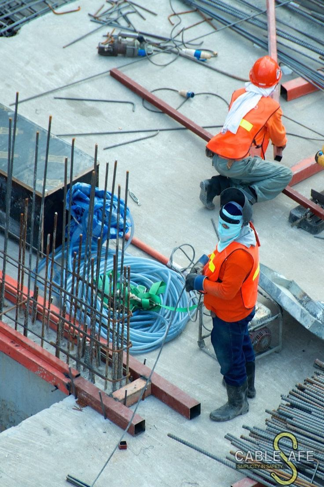
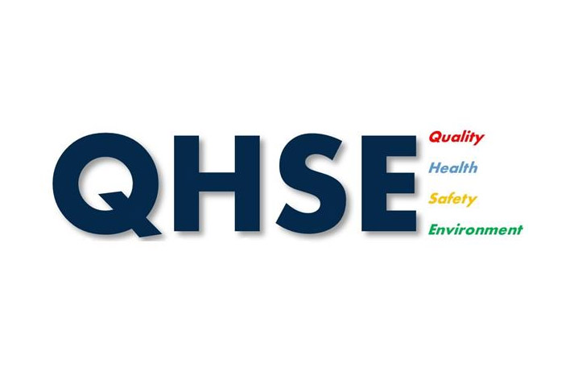

Construire,
ensemble
Depuis 2020, DYG-BTP, agréé par l'État, accompagne ses clients dans leurs projets d'infrastructure en Bâtiment, Routes, Topographie et Assainissement.
Depuis 2020, DYG-BTP, agréé par l'État, accompagne ses clients dans leurs projets d'infrastructure en Bâtiment, Routes, Topographie et Assainissement.
VAKPOSSITO, Rue AGOE NYIVE, Lomé — TOGO.
Un engagement au service des projets ambitieux, alliant sécurité parasismique, résilience climatique et respect de l'environnement.
Depuis 2020, DYG-BTP s'impose comme un acteur clé du développement des infrastructures au Togo. Animés par une vision d'excellence, nous considérons que chaque projet que nous réalisons doit non seulement répondre aux normes de qualité les plus exigeantes, mais aussi contribuer activement à l'amélioration du cadre de vie des populations.
VOIR PLUS... pour bâtir aujourd'hui,
garantir demain.
Les grands domaines d'intervention de DYG-BTP
Ingénierie Civile · Architecture
Routes · VRD · Ouvrages d'Art
Relevés · Mesures · Implantations
Grâce à une solide expérience et un savoir-faire reconnu, DYG-BTP se positionne comme un acteur incontournable dans le secteur du Bâtiment et des Travaux Publics.
Nous réalisons des infrastructures modernes et durables, adaptées aux besoins des entreprises, des collectivités et des particuliers. Nos constructions allient esthétique, solidité et conformité aux exigences techniques et environnementales.
Nous participons activement au développement des infrastructures publiques en construisant des routes, des ponts, des réseaux d'assainissement et d'autres ouvrages essentiels pour l'essor des territoires.
Notre équipe d'experts conçoit des plans et des solutions architecturales sur mesure, intégrant à la fois fonctionnalité, design et innovation pour répondre aux attentes spécifiques de chaque client.
Nous assurons une prise en charge complète des projets, de la phase d'étude jusqu'à leur mise en œuvre effective. Nos ingénieurs veillent à optimiser chaque étape pour garantir des résultats performants et durables.
Nous mettons à disposition des entreprises et professionnels du BTP un parc d'engins modernes et performants — pelles, bulldozers, compacteurs, camions — pour assurer la réussite de leurs chantiers.
Relevés topographiques de précision, implantations de chantiers, calculs de volumes et nivellements pour tous types de projets d'infrastructure et d'aménagement du territoire.
Conception et réalisation de réseaux d'assainissement, collecteurs d'eaux pluviales et usées, fosses septiques et systèmes de drainage pour l'amélioration du cadre de vie des populations.
Études et réalisation d'ouvrages hydrauliques — aménagements de cours d'eau, ouvrages de retenue, protection contre les inondations et gestion durable des ressources en eau.
Quelques avis de nos clients et partenaires
« DYG-BTP a réalisé notre immeuble commercial dans les délais et avec une qualité remarquable. Leur rigueur technique et leur professionnalisme nous ont pleinement satisfaits. Je les recommande sans hésitation pour tout projet de construction. »
Kofi Mensah
Promoteur immobilier, Lomé
« Nous avons fait appel à DYG-BTP pour la réhabilitation d'une route communale. Leur équipe a su s'adapter aux contraintes du terrain tout en livrant un ouvrage solide et bien fini. Un partenaire de confiance pour les collectivités. »
Afi Dossou
Responsable Travaux, Mairie d'Agoe
« La prestation de DYG-BTP en topographie pour notre projet d'aménagement a été irréprochable. Précision, réactivité et sens du détail — leur équipe maîtrise parfaitement son métier. Nous travaillons avec eux depuis trois ans. »
Yao Koffi
Directeur Technique, BTP Invest
« Grâce à DYG-BTP, notre réseau d'assainissement a été conçu et réalisé avec un soin exceptionnel. Leur rigueur, leur transparence et leur respect des engagements font de cette entreprise un partenaire de confiance. »
Aïcha Ouédraogo
Chef de projet, ONG Eau & Vie
Nous vous présentons nos équipes
Gestion et suivi administratif des projets de construction : coordination des équipes, préparation des dossiers et optimisation des ressources.

Notre équipe allie expertise technique et rigueur opérationnelle pour garantir des réalisations à la hauteur de vos attentes.

Nous plaçons l'Hygiène, la Santé, la Sécurité et l'Environnement au cœur de nos activités pour garantir des chantiers sûrs et durables.
Nous vous présentons quelques unes de nos réalisations
DYG-BTP intervient dans la conception, le contrôle et la supervision de projets d'infrastructure au Togo.
Études et contrôle d'entretien, d'aménagement, de réhabilitation et de construction de bâtiments résidentiels, commerciaux et industriels.
Relevés topographiques de précision, implantations de chantiers, calculs de volumes et métrés pour tous types de projets d'infrastructure.
Études et contrôle de travaux d'infrastructure routière — entretien, construction, aménagement de routes, ponts et ouvrages d'art.
Conception de plans et solutions architecturales sur mesure — fonctionnalité, esthétique et innovation pour des ouvrages modernes et durables.
Conception et réalisation de réseaux d'assainissement, collecteurs d'eaux pluviales et usées, fosses septiques et systèmes de drainage urbain et rural.
Études et réalisation d'ouvrages hydrauliques — aménagements de cours d'eau, ouvrages de retenue, protection contre les inondations et gestion des ressources en eau.
Vous avez un projet ou souhaitez mieux comprendre les prestations de DYG-BTP ? Voici les réponses aux questions les plus fréquemment posées.
Contacter DYG-BTPDYG-BTP intervient sur l'ensemble des projets d'infrastructure, tant en nouvelle construction qu'en réaménagement. Bâtiments (IGH, ERP, villas, hôtels, hôpitaux, usines), infrastructures routières (ponts, chaussées, ouvrages d'art), topographie et assainissement.
Oui. DYG-BTP est actif localement et développe des partenariats stratégiques pour une présence accrue dans la région et un rayonnement à l'international.
La mission couvre la vérification de conformité technique, le suivi de l'avancement, le contrôle qualité et financier. Des rapports périodiques rendent compte de l'évolution jusqu'à la réception des travaux.
Oui. Nos réalisations s'appuient sur des fonds nationaux, régionaux et internationaux. DYG-BTP accompagne également des initiatives portées par des financements privés avec la même exigence de qualité.
DYG-BTP s'appuie sur un plateau technique moderne : stations totales, GPS RTK, logiciels BIM, AutoCAD, MS Project et drones photogrammétriques pour des relevés et études de précision.
Utilisez le formulaire de contact ci-dessous, ou contactez-nous directement par téléphone, WhatsApp ou e-mail. Nous revenons vers vous rapidement avec une proposition adaptée.
DYG-BTP est agréé par l'État et intervient sur trois domaines : Bâtiments, Hydraulique & Assainissement et Infrastructures routières, avec des standards de qualité élevés.
Parlons-en — nous revenons vers vous rapidement.
Adresse
VAKPOSSITO, Rue AGOE NYIVE
Lomé, Région Maritime
République Togolaise
Localisation
Itinéraire Google Maps →Décrivez votre besoin, nous revenons vers vous rapidement.
Ingénieurs, techniciens, projeteurs, professionnels du métier : rejoignez DYG-BTP pour contribuer à l'essor des infrastructures nouvelles.